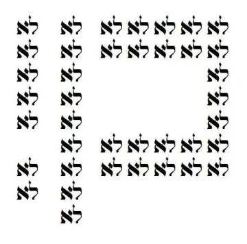

יום שישי א' דחוה"מ פסח ה'תשפ"ו.
דברים פשוטים
בין מנחה לערבית בחג הראשון שמעתי דבר תורה ע"י רב ומרצה חשוב וזה פחות או יותר היה תורף דבריו (בחלק האגדה וההשקפה) בזמן שהיה לו:
מדוע אנו מציינים את פסח – זמן יציאת מצריים, ולא מציינים את יום חצײת הירדן והכניסה לא"י? עד כדי כך שהט"ז אומר שמציינים את שבת הגדול דווקא בשבת ולא בי' ניסן שזה תאריך הנס (למ"ד ששבת הגדול היא ע"ש הנס ולא כפי הפשט ע"ש ההפטרה) כדי שחלילה לא יבואו להגיד שאנו חוגגים את יום הכניסה לארץ. אם כך מתחדדת השאלה – מה כל כך חמור בלחגוג, לציין ולזכור את אירוע מעבר הירדן.
התשובה הייתה במשל: עבד לאדון אכזר שברח מאדוניו, ישן מספר שבועות על ספסל ברחוב עד שהתקבל לעבודה אצל המלך, עדיין יחגוג את יום החירות שלו ביום הבריחה מהאדון האכזר אע"פ שהוא יצא וישן מספר שבועות ברחוב. אז גם אנו חוגגים בעיקר את היציאה, ולא את היום שנכנסנו לארץ, כדי שנזכור שאיננו עם ככל העמים, שיש לנו טריטוריה ועם, אלא נהיינו עם ביציאת מצרים, ותכלית יציאת מצריים היא קבלת התורה, וזוהי החירות האמיתית, וזוהי ההשקפה הנכונה. ע"כ תורף דבריו1.
אחרי המחילה מכבוד תורתו, אשתף שהיו שתי נקודות אגביות בדבר התורה שקשו לי מאוד מאוד. איני חס ושלום חושד בדובר שאמר את דבריו חלילה שלא לשם שמיים או שאמר מה שלא קיבל מרבותיו. אני בטוח בכוונותיו הטובות ואפילו בכך שהוא קיבל את השקפה זו מרבותיו, וייתכן שאף רבותיו מרבותיהם. עם זאת, איני יכול לכבוש את עצמי מלהצביע על כמה נקודות שבהן איני רואה איתו את הדברים עין בעין ואני סבור שראוי ואף מחוייב להתריע ולמחות על הנקודות הללו, וברצוני להציע את נקודות אלו לשיפוט הקורא. אינני מתיימר להציג את האמת האולטימטיבית ועל כן אציג את נקודות אלו ואשתדל לבארן ככל הניתן במסגרת זו, ואשמח מאוד מאוד להערות והארות ודיון בנושא. אני מפציר בכל מי שיש לו הערה או קושי עם מה שאני כותב לפנות אליי שננסה ללבן זאת יחד כי אני רק אות אחת בתורה וכל עוד תהיה אות שחסרה לי ספר התורה פסול.
איתי שתי הערות עיקריות לגבי שתי נקודות שהוצגו כדרך אגב ע"י הדובר: ראשונה, שנהיינו לעם ביציאת מצרים, ושנייה, שתכלית יציאת מצריים הייתה קבלת התורה.
אתחיל מהנקודה הראשונה: לא נהיינו לעם ביציאת מצריים. משה רבנו אומר לישראל ערב הכניסה לארץ בתיאורו את מעמד הברכות והקללות שיהיה בהר גריזים ועיבל: "וַיְדַבֵּ֤ר מֹשֶׁה֙ וְהַכֹּהֲנִ֣ים הַלְוִיִּ֔ם אֶ֥ל כׇּל־יִשְׂרָאֵ֖ל לֵאמֹ֑ר הַסְכֵּ֤ת וּשְׁמַע֙ יִשְׂרָאֵ֔ל הַיּ֤וֹם הַזֶּה֙ נִהְיֵ֣יתָֽ לְעָ֔ם לַה' אֱ־לֹהֶֽיךָ". עם ישראל נהיה לעם רק כשהוא נכנס לארץ, ואיננו עם באופן שלם, וודאי לא עם ה' לפני הכניסה לארץ. וכפי שכתוב במדרש רבה שרש"י מביא על הפסוק: "וְנָתַתִּ֣י לְ֠ךָ֠ וּלְזַרְעֲךָ֨ אַחֲרֶ֜יךָ אֵ֣ת ׀ אֶ֣רֶץ מְגֻרֶ֗יךָ אֵ֚ת כׇּל־אֶ֣רֶץ כְּנַ֔עַן לַאֲחֻזַּ֖ת עוֹלָ֑ם וְהָיִ֥יתִי לָהֶ֖ם לֵא־לֹהִֽים" – "אִם נִכְנָסִים בָּנֶיךָ לָאָרֶץ – הֵן מְקַבְּלִין אֱלָהוּתִי, וְאִם לָאו – אֵין מְקַבְּלִין". הקב"ה קורא אמנם לישראל "עמי" אפילו לפני יציאת מצרים "וַיֹּ֣אמֶר ה' רָאֹ֥ה רָאִ֛יתִי אֶת־עֳנִ֥י עַמִּ֖י אֲשֶׁ֣ר בְּמִצְרָ֑יִם וְאֶת־צַעֲקָתָ֤ם שָׁמַ֨עְתִּי֙ מִפְּנֵ֣י נֹֽגְשָׂ֔יו כִּ֥י יָדַ֖עְתִּי אֶת־מַכְאֹבָֽיו", אך קו פרשת המים המים בו נהיינו לעם – זה הכניסה לארץ.
מכאן נמשיך בטבעיות לנקודה הבאה והקריטית יותר. מטרת יציאת מצריים היא לשוב לארץ ולהיות לעם ה' (שכפי שאמרנו לעיל – חייבים לשוב לארץ כדי להיות עַם ה'), כפי שכתוב בתורה ביחס לגלות מצרים בברית בין הבתרים: "וַיֹּאמַ֑ר אֲדֹ־נָ֣י א־להים בַּמָּ֥ה אֵדַ֖ע כִּ֥י אִֽירָשֶֽׁנָּה... וַיֹּ֣אמֶר לְאַבְרָ֗ם יָדֹ֨עַ תֵּדַ֜ע כִּי־גֵ֣ר ׀ יִהְיֶ֣ה זַרְעֲךָ֗ בְּאֶ֙רֶץ֙ לֹ֣א לָהֶ֔ם וַעֲבָד֖וּם וְעִנּ֣וּ אֹתָ֑ם אַרְבַּ֥ע מֵא֖וֹת שָׁנָֽה", ונשנה במעמד הסנה: "וָאֵרֵ֞ד לְהַצִּיל֣וֹ מִיַּ֣ד מִצְרַ֗יִם וּֽלְהַעֲלֹתוֹ֮ מִן־הָאָ֣רֶץ הַהִוא֒ אֶל־אֶ֤רֶץ טוֹבָה֙ וּרְחָבָ֔ה אֶל־אֶ֛רֶץ זָבַ֥ת חָלָ֖ב וּדְבָ֑שׁ אֶל־מְק֤וֹם הַֽכְּנַעֲנִי֙ וְהַ֣חִתִּ֔י וְהָֽאֱמֹרִי֙ וְהַפְּרִזִּ֔י וְהַחִוִּ֖י וְהַיְבוּסִֽי", ושולש בריש פרשת וארא: "וְגַ֨ם הֲקִמֹ֤תִי אֶת־בְּרִיתִי֙ אִתָּ֔ם לָתֵ֥ת לָהֶ֖ם אֶת־אֶ֣רֶץ כְּנָ֑עַן אֵ֛ת אֶ֥רֶץ מְגֻרֵיהֶ֖ם אֲשֶׁר־גָּ֥רוּ בָֽהּ... לָכֵ֞ן אֱמֹ֥ר לִבְנֵֽי־יִשְׂרָאֵל֮ אֲנִ֣י ה' וְהוֹצֵאתִ֣י אֶתְכֶ֗ם... וְהִצַּלְתִּ֥י... וְגָאַלְתִּ֤י... וְלָקַחְתִּ֨י אֶתְכֶ֥ם לִי֙ לְעָ֔ם וְהָיִ֥יתִי לָכֶ֖ם לֵֽא־לֹהִ֑ים... וְהֵבֵאתִ֤י אֶתְכֶם֙ אֶל־הָאָ֔רֶץ אֲשֶׁ֤ר נָשָׂ֙אתִי֙ אֶת־יָדִ֔י לָתֵ֣ת אֹתָ֔הּ לְאַבְרָהָ֥ם לְיִצְחָ֖ק וּֽלְיַעֲקֹ֑ב וְנָתַתִּ֨י אֹתָ֥הּ לָכֶ֛ם מוֹרָשָׁ֖ה אֲנִ֥י ה'", ובפרשת בהר: "אֲנִ֗י ה' אֱ־לֹ֣הֵיכֶ֔ם אֲשֶׁר־הֹוצֵ֥אתִי אֶתְכֶ֖ם מֵאֶ֣רֶץ מִצְרָ֑יִם לָתֵ֤ת לָכֶם֙ אֶת־אֶ֣רֶץ כְּנַ֔עַן לִהְיֹ֥ות לָכֶ֖ם לֵא־לֹהִֽים", וחזר שוב בפרשת כי תוליד בנים: "וְתַ֗חַת כִּ֤י אָהַב֙ אֶת־אֲבֹתֶ֔יךָ וַיִּבְחַ֥ר בְּזַרְע֖וֹ אַחֲרָ֑יו וַיּוֹצִֽאֲךָ֧ בְּפָנָ֛יו בְּכֹח֥וֹ הַגָּדֹ֖ל מִמִּצְרָֽיִם׃ לְהוֹרִ֗ישׁ גּוֹיִ֛ם גְּדֹלִ֧ים וַעֲצֻמִ֛ים מִמְּךָ֖ מִפָּנֶ֑יךָ לַהֲבִֽיאֲךָ֗ לָֽתֶת־לְךָ֧ אֶת־אַרְצָ֛ם נַחֲלָ֖ה כַּיּ֥וֹם הַזֶּֽה", ושוב בהמשך פרשת ואתחנן "וְאוֹתָ֖נוּ הוֹצִ֣יא מִשָּׁ֑ם לְמַ֙עַן֙ הָבִ֣יא אֹתָ֔נוּ לָ֤תֶת לָ֙נוּ֙ אֶת־הָאָ֔רֶץ אֲשֶׁ֥ר נִשְׁבַּ֖ע לַאֲבֹתֵֽינוּ". ישראל יוצאים ממצרים על מנת לשוב לארץ ישראל ולהיות עם ה'. אין שום אזכור לקבלת תורה או למטרה "דתית" כלשהי כמטרה של יציאת מצרים.
יציאת מצרים היא היציאה לחירות עולם, וישראל כשהם בני חורין הם באופן טבעי נמשכים אחרי ה' והתורה מִתְגַּלָּה מנשמתם. החירות היא להיות נאמן לנשמתך שזה העיקר. בניגוד לחופש שזהו על דרך השלילה – אי שעבוד לגורם זר, החירות היא מושג עם תוכן חיובי – להיות נאמן רק למי שאתה באמת – לא לאדון, לא לעם אחר, לא ליצרים, לא לעולם הזה, לא למלאך המוות, לא לעבודה זרה. רוצה לדעת מי אתה? יש את התורה שהיא עוזרת לך להיות אתה. ולכן ישראל קדמו לתורה ולא ההפך – היא נכתבה לפי האופי הטבעי שלנו. וכפי שהרחבנו במאמרים קודמים2.
בהקשר זה של חירות, המשמעות של "עֶבֶד ה' הוּא לְבַד חׇפְשִׁי." ו"'וְהַ֨לֻּחֹ֔ת מַעֲשֵׂ֥ה אֱלֹ־הִ֖ים הֵ֑מָּה וְהַמִּכְתָּ֗ב מִכְתַּ֤ב א־להים ה֔וּא חָר֖וּת עַל־הַלֻּחֹֽת' – אַל תִּקְרָא חָרוּת אֶלָּא חֵרוּת. שֶׁאֵין לְךָ בֶּן חוֹרִין אֶלָּא מִי שֶׁעוֹסֵק בְּתַלְמוּד תּוֹרָה", איננה להחליף ציות לאדון בשר ודם בציות לאדון שאיננו בשר ודם, כי אם יַחַסְךָ לה' או לתורה הוא כיחס לאדון שמצווה עליך – אתה עדיין עבד בנשמתך ובמהותך, ולא בן חורין. ההבדל הוא מהותי! אנו מאמינים באחדות ולא בשתי רשויות, אנו מאמינים ש"קודשא בריך הוא, אורייתא וישראל מתקשרות זו בזו3", וש"קוּדְשָׁא בְּרִיךְ הוּא וּכְנֶסֶת יִשְׂרָאֵל נִקְרָאִים אֶחָד, וְזֶה בְּלֹא זֶה לֹא נִקְרָאִים אֶחָד4", וש"אִסְתָּכַּל בְּאוֹרַיְיתָא, וּבָרָא עָלְמָא5" ושישראל קדמו לתורה כעדות אליהו הנביא6, ושנשמה של כל יהודי היא משתלשלת לאות בתורה, ולכן להיות עבד ה' זו לא עבדות לגורם חיצוני, אוהב ככל שיהיה, אלא נאמנות לנשמתך שהיא חלק אלוה ממעל ולתורה שהיא נכתבה לפי טבעך7 כי היא נבראה בשביל ישראל ולפי האופי שלהם. וזוהי משמעות הדרישה "אַל תִּקְרָא חָרוּת אֶלָּא חֵרוּת", כמו שבלוחות הכתב היה חרות באבן עצמה וככה נברא, ולא שנכתב עליו בנפרד מקיומו. ולכן אם אדם מישראל הוא בן חורין, שזה אומר שהוא יכול להיות נאמן לעצמו ולטבעו האמיתי כי הוא אינו משועבד לאף גורם חיצוני אליו – או אז ודאי הוא יהיה מחובר לה' ועושה רצונו מנשמתו כפי שקיימו האבות את כל התורה כולה. אלא שיש דרך ארוכה להגיע להכרות כה אמיתית ועמוקה מי הוא באמת. וכן בעם – אם עם ישראל יהיה בן חורין, שיכול להיות נאמן לעצמו ולא נתון לעול זרים, אזי באופן טבעי היה בארץ ישראל כולם נביאים, והיינו רואים בבירור כישעיה כמה הם כבר עכשיו "יֹ֣דְעֵי צֶ֔דֶק עַ֖ם תּוֹרָתִ֣י בְלִבָּ֑ם8", אך לבא לפומא לא גליא. אמת זו מובעת באופן בהיר ברעיון התשובה – אני שב לטבע שלי שהוא טהור וטוב, ולכן התשובה היא היא באה מעולם החירות כידוע9 – שאתה מבין שה' הוא לא חיצוני אליך אלא פנימי אליך, ורצונו שוכן בתוך רצונך10, והתורה באה לעזור לך לגלות את עצמך ואת טבעך האמיתי ולהתגבר על הקשיים שבדרך – זוהי תשובה וזהי החירות של עבד ה' ושל העוסק בתורה. ולכן החירות היא כבר ביציאת מצרים בעצם זה שיצאנו מעול זרים, כפי שאנו אומרים בתפילה "וַיּוֹצִיא אֶת עַמּוֹ יִשְׂרָאֵל מִתּוֹכָם לְחֵירוּת עוֹלָם", ולכן דווקא פסח הוא חג החירות ולא שבועות11.12
זה יכול להישמע ככפירה להגיד שעקרונית לא צריך מתן תורה כדי לקיים את רצון ה', אך הרס"ג אומר זאת בהקדמתו לאמונות ודעות13. הוא מבאר שם כי התורה היא אמת ולכן היינו מגיעים אליה בחקירה, אבל כדי שלא נעמוד בשקר עד שנגיע אל האמת, ובשביל אלו שיתייאשו מהדרך – הקב"ה אהב אותנו וריחם עלינו ונתן לנו תורה, שמקצרת לנו את הדרך ואומרת בסיסמאות כבר מי אנחנו. כמו שהאבות קיימו את כל התורה – ודאי שאנו, בניהם, זה טבוע בנו. אבל זהו הטבע של נשמתנו ויש דרך ארוכה לצאת להגיע לחירות כה עמוקה לגלות את דבר ה' שבנשמתנו אז הקב"ה נתן לנו תורה שנוכל בעזרתה להגיע לכך.
השאלה שמיד שואלים היא הפסוק "בְּהוֹצִֽיאֲךָ֤ אֶת־הָעָם֙ מִמִּצְרַ֔יִם תַּֽעַבְדוּן֙ אֶת־הָ֣אֱ־לֹהִ֔ים עַ֖ל הָהָ֥ר הַזֶּֽה"14 שמשמע לכאורה שיש מעמד הר סיני בתכנית? ובכן, יש לקרוא את הפסוקים בשלמותם: "וַיֹּ֤אמֶר מֹשֶׁה֙ אֶל־הָ֣אֱלֹהִ֔ים מִ֣י אָנֹ֔כִי כִּ֥י אֵלֵ֖ךְ אֶל־פַּרְעֹ֑ה וְכִ֥י אוֹצִ֛יא אֶת־בְּנֵ֥י יִשְׂרָאֵ֖ל מִמִּצְרָֽיִם? וַיֹּ֙אמֶר֙ כִּֽי־אֶֽהְיֶ֣ה עִמָּ֔ךְ וְזֶה־לְּךָ֣ הָא֔וֹת כִּ֥י אָנֹכִ֖י שְׁלַחְתִּ֑יךָ בְּהוֹצִֽיאֲךָ֤ אֶת־הָעָם֙ מִמִּצְרַ֔יִם תַּֽעַבְדוּן֙ אֶת־הָ֣אֱ־לֹהִ֔ים עַ֖ל הָהָ֥ר הַזֶּֽה". לא כתוב כאן שזו מטרת היציאה ממצרים, כי אם שמעמד הר סיני נועד לאות למשה כי אכן הוא ראוי להוציא את בני ישראל ממצרים וכי אכן ה' שלחו. מתקשים לקבל? הבה נשמע את דבר ה' מדוע לעשות את מעמד הר סיני בפרשת יתרו: "וַיָּבֹ֣א מֹשֶׁ֔ה וַיִּקְרָ֖א לְזִקְנֵ֣י הָעָ֑ם וַיָּ֣שֶׂם לִפְנֵיהֶ֗ם אֵ֚ת כׇּל־הַדְּבָרִ֣ים הָאֵ֔לֶּה אֲשֶׁ֥ר צִוָּ֖הוּ ה'׃" משה יורד ומוסר לעם את דברי ה' שיועדו לבית יעקב ולבני ישראל, "וַיַּעֲנ֨וּ כׇל־הָעָ֤ם יַחְדָּו֙ וַיֹּ֣אמְר֔וּ כֹּ֛ל אֲשֶׁר־דִּבֶּ֥ר ה' נַעֲשֶׂ֑ה" – העם לא מוכן לקבל את שליחות משה ורוצה שה' ידבר בעצמו. עדיין מתקשים לקבל? עיינו בתשובת ה' למשה: "וַיֹּ֨אמֶר ה' אֶל־מֹשֶׁ֗ה הִנֵּ֨ה אָנֹכִ֜י בָּ֣א אֵלֶ֘יךָ֮ בְּעַ֣ב הֶֽעָנָן֒ בַּעֲב֞וּר יִשְׁמַ֤ע הָעָם֙ בְּדַבְּרִ֣י עִמָּ֔ךְ וְגַם־בְּךָ֖ יַאֲמִ֣ינוּ לְעוֹלָ֑ם וַיַּגֵּ֥ד מֹשֶׁ֛ה אֶת־דִּבְרֵ֥י הָעָ֖ם אֶל־ה'".
עד כאן עיקרי הדברים, אך ארחיב מעט את הביאור בנקודה זו בקיצור נמרץ. ידוע שהיושבים במצרים התחלקו לשני חלקים במהלך מכות מצרים: ההולכים אחרי פרעה מחד, ומאידך – ההולכים אחרי משה, אנשים שהיו פְּרוֹ-משה, שהתרשמו מהדמות המפעימה של משה ומאלהיו החזק. והמצב ערב מכת בכורות מתואר כך: "גַּ֣ם ׀ הָאִ֣ישׁ מֹשֶׁ֗ה גָּד֤וֹל מְאֹד֙ בְּאֶ֣רֶץ מִצְרַ֔יִם בְּעֵינֵ֥י עַבְדֵֽי־פַרְעֹ֖ה וּבְעֵינֵ֥י הָעָֽם". זהו אותו העם שאנו פוגשים אחר כך "וַתֶּחֱזַ֤ק מִצְרַ֙יִם֙ עַל־הָעָ֔ם לְמַהֵ֖ר לְשַׁלְּחָ֣ם מִן־הָאָ֑רֶץ" וזהו הערב רב שעלה ממצרים, ואכן הזוהר מדגיש בעקבות הפשט שכל פעם שכתוב "העם" הכוונה לערב רב15. אם כך, בהתאמה, היו שתי קבוצות שיצאו ממצרים, ומסיבות שונות: בני ישראל, שהם משפחה וקבוצה לאומית מוגדרת שקיבלו במסורת שהם יורדים לגלות במצרים אבל ישובו אל ארץ העברים, ארץ אבותיהם, "וֵֽאלֹהִ֞ים פָּקֹ֧ד יִפְקֹ֣ד אֶתְכֶ֗ם וְהֶעֱלָ֤ה אֶתְכֶם֙ מִן־הָאָ֣רֶץ הַזֹּ֔את אֶל־הָאָ֕רֶץ אֲשֶׁ֥ר נִשְׁבַּ֛ע לְאַבְרָהָ֥ם לְיִצְחָ֖ק וּֽלְיַעֲקֹֽב". ועוד קבוצה, "העם", שהם התלהבו מהכריזמה של משה ומאלהיו, ואשריהם על כך שזכו להצטרף לישראל! אבל המניע שלהם לצאת היא סיבה יותר של מנהיג ודת, ולא כעם ששב לארץ אבותיו כמובטח לו.
התוכנית המקורית של ה' ליציאת מצרים היתה לנסוע דרך עזה ולהיכנס לארץ משם, ולקבל תורה בהר המוריה, אך דא עקא "וַיְהִ֗י בְּשַׁלַּ֣ח פַּרְעֹה֮ אֶת־הָעָם֒ וְלֹא־נָחָ֣ם אֱ־לֹהִ֗ים דֶּ֚רֶךְ אֶ֣רֶץ פְּלִשְׁתִּ֔ים כִּ֥י קָר֖וֹב ה֑וּא כִּ֣י ׀ אָמַ֣ר אֱ־לֹהִ֗ים פֶּֽן־יִנָּחֵ֥ם הָעָ֛ם בִּרְאֹתָ֥ם מִלְחָמָ֖ה וְשָׁ֥בוּ מִצְרָֽיְמָה". אין להם סיבה לשוש אלי קרב על ארץ שלא הובטחה להם מצד אחד, והם כה חשובים עד שצריך שכולנו יחד נעשה סיבוב דרך המדבר – פן ינחם העם ושבו מצרימה. והאמת שבכל פרשת מעמד הר סיני ישראל לא מוזכרים... הנמען המקורי של מעמד הר סיני וקבלת התורה בחו"ל, היא הערב רב, כדי שיוכלו להתגבר על פחדם במלחמות לכיבוש הארץ, וישראל קיבלו את התורה בסיני ולא בארץ – אגב הערב רב. אך מפני שאין דבר כזה תורה בחו"ל ("כי מציון תצא תורה"), וודאי לא נבואה בחו"ל ("כל מי שהתנבא – לא התנבא כי אם בה או בעבורה", כוזרי ב' י"ד), וגם לא צבור בחו"ל, לכן הקב"ה תלש את הר המוריה ממקומו והביאו לסיני16... הקב"ה אומר למשה בתחילה לומר לישראל "אַתֶּ֣ם רְאִיתֶ֔ם... וִהְיִ֨יתֶם לִ֤י סְגֻלָּה֙...", ומשם כל הסיפור הוא מול "העם". אבל מעמד הר סיני שהיה בכפייה "וַיִּֽתְיַצְּב֖וּ בְּתַחְתִּ֥ית הָהָֽר – מְלַמֵּד שֶׁכָּפָה הַקָּדוֹשׁ בָּרוּךְ הוּא עֲלֵיהֶם אֶת הָהָר כְּגִיגִית, וְאָמַר לָהֶם: אִם אַתֶּם מְקַבְּלִים הַתּוֹרָה מוּטָב, וְאִם לָאו – שָׁם תְּהֵא קְבוּרַתְכֶם17", גורם לנפילה "וַיַּ֤רְא הָעָם֙ וַיָּנֻ֔עוּ וַיַּֽעַמְד֖וּ מֵֽרָחֹֽק׃ וַיֹּֽאמְרוּ֙ אֶל־מֹשֶׁ֔ה דַּבֵּר־אַתָּ֥ה עִמָּ֖נוּ וְנִשְׁמָ֑עָה..." שזה הפך רצון ה'18 והפך משמעות החירות! כל עוד יש לך רב ואתה לא שומע מנשמתך את רצון ה' ממך אתה עדיין לא בן חורין אמיתי, כי זה עדיין חיצוני לך ולא נאמנות לנשמתך בלבד שהיא מתאימה כמובן לרצון ה'.
הקלקול הזה ממשיך ו"תַחְתִּ֥ית הָהָֽר" חוזרת כמו בומרנג בעגל: "וַֽיְהִ֗י כַּאֲשֶׁ֤ר קָרַב֙ אֶל־הַֽמַּחֲנֶ֔ה וַיַּ֥רְא אֶת־הָעֵ֖גֶל וּמְחֹלֹ֑ת וַיִּֽחַר־אַ֣ף מֹשֶׁ֗ה וַיַּשְׁלֵ֤ךְ מִיָּדָיו֙ אֶת־הַלֻּחֹ֔ת וַיְשַׁבֵּ֥ר אֹתָ֖ם תַּ֥חַת הָהָֽר" כי העם הזה, שבא בעקבות "הָאִ֣ישׁ מֹשֶׁ֗ה גָּד֤וֹל מְאֹד֙ בְּאֶ֣רֶץ מִצְרַ֔יִם" מתלונן: "ק֣וּם ׀ עֲשֵׂה־לָ֣נוּ אֱלֹהִ֗ים19 אֲשֶׁ֤ר יֵֽלְכוּ֙ לְפָנֵ֔ינוּ כִּי־זֶ֣ה ׀ מֹשֶׁ֣ה הָאִ֗ישׁ אֲשֶׁ֤ר הֶֽעֱלָ֨נוּ֙ מֵאֶ֣רֶץ מִצְרַ֔יִם לֹ֥א יָדַ֖עְנוּ מֶה־הָ֥יָה לֹֽו". ישראל שיצאו כדי לחזור לארץ, לא משנה להם מי מוציא אותם – הם ממשיכים לארץ שלהם. אבל הערב רב מאבד את זה. הם במהותם עבדים, רגילים כל שנותיהם ל"בית עבדים", ועבודת אלהים שהם מכירים זה ציות וניסיון לגרום לאל שלהם לא לזעום עליהם ולהמשיך להפרות את הנילוס, והם פשוט החליפו מאל קטן וחלש יחסית לאל גדול וחזק, אבל עדיין אין הזדהות כאחדות פנימית בין האישיות לבין האלוה. לכן, אף על פי שבמעמד הר סיני הם ראו יחד עם כל ישראל את ארבעת פני המרכבה – אדם, ארי, נשר ושור ('כרוב' בארמית, מלשון חורש), הם מגשימים את הפנים היחידים שהם יכולים להתחייב אליהם – פני שור שבמרכבה, שעניינם עבודת ה' בקבלת עול, ואמירה: הפגישה שלי עם ה' היא רק ואך ורק בציות עצמו, הגבולות הם הם הקשר שלי עם א־להים, וגם התורה – היא אך ורק גבולות, ומי שמנסה לעבוד את ה' רק בשור – אפילו שור לא יוצא לו, אלא עגל. וזה נקרא עסק התורה שלא לשמה, שלכן הזוהר קורא לה עבודת פרך: "וְיֵשׁ שֶׁלֹּא מִשְׁתַּדְּלִים בַּתּוֹרָה שֶׁבְּעַל פֹּה לִשְׁמָהּ, וְנֶאֱמַר בָּהֶם 'וַיְמָרַרוּ אֶת חַיֵּיהֶם בַּעֲבֹדָה קָשָׁה' – זוֹהִי קֻשְׁיָה, 'בְּחֹמֶר' – זֶה קַל וָחֹמֶר. 'וּבִלְבֵנִים' – בְּלִבּוּן הַהֲלָכוֹת, שֶׁעֲלֵיהֶן נֶאֱמַר 'וְתֹכֶן לְבֵנִים תִּתְּנוּ'. 'בְּכָל עֲבוֹדָה בַּשָּׂדֶה' – זוֹ בָּרַיְתָא. 'אֶת כָּל עֲבוֹדָתָם' – זֶהוּ פְּסָק. 'אֲשֶׁר עָבְדוּ בָּהֶם בְּפָרֶךְ' – פִּרְכָא. כַּאֲשֶׁר מַגִּיעִים לְעָמְקָהּ שֶׁל הֲלָכָה נֶאֱמַר בָּהֶם שֶׁאֵין הֲלָכָה כְּמוֹתָם 20", ולכן הם אולי נראים עוסקים בתורה – אבל ממש לא בני חורין. הערב רב לא האמין בעצמו שהוא יכול להיות בקשר עם ה' בפנים האחרות שבמרכבה: פני נשר – בעמקות ובמעוף, פני אריה – בעצמה ובהתלהבות, ופני אדם – מתוך הזדהות.
התיקון מגיע בלוחות השניים ביום הכיפורים: מתן תורה מתוקן לא מתוך כפייה אלא מתוך תשובה שמגיעה מעולם החירות, ההבנה שאני באמת שב לעצמי למי שאני באמת, והתורה היא עזר לכך, ולא כפיית התורה בתחתית ההר שאם לא אקבל את התורה או שרגע אחד לא אלמד תורה – ח"ו העולם ייחרב. והתיקון של העגל מתגלה בכרובים שנצטווינו עליהם מיד אחר כך – במקום עגל אחד, שני עגלים עם פני תינוק, שקול ה' מתגלה ביניהם, לאמר: המפגש עם הקב"ה אינו הגבולות, כי אם בין הגבולות, הגבולות מאפשרים את המפגש, את ההתוועדות, "וְנֹועַדְתִּ֣י לְךָ֮ שָׁם֒ וְדִבַּרְתִּ֨י אִתְּךָ֜ מֵעַ֣ל הַכַּפֹּ֗רֶת מִבֵּין֙ שְׁנֵ֣י הַכְּרֻבִ֔ים אֲשֶׁ֖ר עַל־אֲרֹ֣ן הָעֵדֻ֑ת".
אולי בפרפרזה, אני מבקש להתקדם מתפיסת התורה כמו בתמונה המפורסמת מימין21 לתפיסת תורה יותר דומה לתמונה משמאל22:


ניסיתי עד מאוד להבין למה אני כה נזעק על זה וכל כך עסוק בהבהרת הנקודה הזאת, והקב"ה זימן לי פסקה במהר"ל שנראה לי שמבהירה את הנקודה שמפריעה לי כל כך: "וְעוֹד, כִּי הַתַּלְמִיד חָכָם לִבּוֹ דָּבֵק אֶל הַתּוֹרָה, כִּי חֲבִיבָה הַתּוֹרָה עַל לוֹמְדֶיהָ. וּבִשְׁבִיל אַהֲבָתָם לַתּוֹרָה, דָּבָר זֶה מְסַלֵּק אַהֲבַת הַמָּקוֹם בְּשָׁעָה זֹאת שֶׁבָּאִים לִלְמֹד. כִּי כַּאֲשֶׁר בָּאִים לִלְמֹד תּוֹרָה, וְאַהֲבָתָם אֶל הַתּוֹרָה, אֵין בַּלִּמּוּד שֶׁלָּהֶם הָאַהֲבָה אֶל הַשֵּׁם יִתְבָּרַךְ בְּמָה שֶׁנָּתַן תּוֹרָה, כִּי אֵין הָאַהֲבָה לִשְׁנַיִם. כִּי כָּל אַהֲבָה הִיא דְּבֵקוּת בַּנֶּאֱהָב, וְאִם דָּבַק בָּזֶה – אֵינוֹ דָּבֵק בָּאַחֵר. וּלְפִיכָךְ אַהֲבַת הַתּוֹרָה, שֶׁהִיא חֲבִיבָה עֲלֵיהֶם, דָּבָר זֶה מְסַלֵּק שֶׁאֵין הַבְּרָכָה בְּכָל לִבּוֹ אֶל הַשֵּׁם יִתְבָּרַךְ בְּמָה שֶׁנָּתַן הַתּוֹרָה". אני מרגיש חזק נורא את הסיכון מהנקודה הזו בהמון דוברים שמבכרים את התורה על פני הקב"ה כך שכמעט כל הדיבורים שלהם הם על גדלות התורה, חשיבות התורה, חשיבות לומדי תורה וכדו', או על פני ישראל23, ואני עומד בשער וצווח על כך מכאבים. וזה היה העניין שלא בירכו בתורה תחילה, שגם אם אמרו ברכות התורה לא באמת האמינו בסדר הנכון: "ברוך אתה ה'... אשר בחר בנו מכל העמים, ונתן לנו את תורתו", ואז התורה היא עושה פלאים כשהיא במקומה.
ויש עוד הרבה במה להאריך וחלקם במאמרים אחרים שכבר כתבנו בעבר.
נסכם בביאורו של משה לתורה: "הוֹאִ֣יל מֹשֶׁ֔ה בֵּאֵ֛ר אֶת־הַתּוֹרָ֥ה הַזֹּ֖את לֵאמֹֽר׃ ה' אֱ־לֹהֵ֛ינוּ דִּבֶּ֥ר אֵלֵ֖ינוּ בְּחֹרֵ֣ב לֵאמֹ֑ר רַב־לָכֶ֥ם שֶׁ֖בֶת בָּהָ֥ר הַזֶּֽה׃ פְּנ֣וּ ׀ וּסְע֣וּ לָכֶ֗ם וּבֹ֨אוּ הַ֥ר הָֽאֱמֹרִי֮ וְאֶל־כׇּל־שְׁכֵנָיו֒ בָּעֲרָבָ֥ה בָהָ֛ר וּבַשְּׁפֵלָ֥ה וּבַנֶּ֖גֶב וּבְח֣וֹף הַיָּ֑ם אֶ֤רֶץ הַֽכְּנַעֲנִי֙ וְהַלְּבָנ֔וֹן עַד־הַנָּהָ֥ר הַגָּדֹ֖ל נְהַר־פְּרָֽת׃ רְאֵ֛ה נָתַ֥תִּי לִפְנֵיכֶ֖ם אֶת־הָאָ֑רֶץ בֹּ֚אוּ וּרְשׁ֣וּ אֶת־הָאָ֔רֶץ אֲשֶׁ֣ר נִשְׁבַּ֣ע ה' לַאֲבֹ֨תֵיכֶ֜ם לְאַבְרָהָ֨ם לְיִצְחָ֤ק וּֽלְיַעֲקֹב֙ לָתֵ֣ת לָהֶ֔ם וּלְזַרְעָ֖ם אַחֲרֵיהֶֽם". או במילים שלי: די להיות תקועים בתפיסת ה' שמתרכזת ועוצרת את ההיסטוריה הלאומית במעמד הר סיני ובקבלת התורה. רַב־לָכֶ֥ם שֶׁ֖בֶת בָּהָ֥ר הַזֶּֽה! בֹּ֚אוּ וּרְשׁ֣וּ אֶת־הָאָ֔רֶץ כי רק בה – יהיה המפגש המיוחל.
לא בטוח שהצגתי את "ההשקפה הנכונה" כפי שהדובר התחייב, אבל השתדלתי להגיד מה שהשיגה נשמתי בסיני ומה שקיבלתי מרבותי.
מקווה שהדברים היוצאים מן הלב נכנסים אל הלב, וכפי שכתבתי בתחילת המאמר, אשמח ממש להארות והערות (גם אלימות מתוך אהבה תתקבל באהבה ובהבנה ואף בשמחה🙃).
@אוריין חסידים
Oryan.Hassidim@gmail.com
וכפועל יוצא מדבריו אע"פ שלא ברור אם הוא אכן סובר כך – אין סיבה לחגוג את יום העצמאות.↩︎
כגון מאמר על חג מתן תורה, "מבוא למחשבת בית יוסף" ו"מבוא קצר בענייני ידיעה וסנהדרין".↩︎
זוהר אחרי מות, דף ע"ג.↩︎
זוהר אמור, צ"ג:↩︎
זוהר תרומה, קס"א:↩︎
תנא דבי אליהו רבה י"ד.↩︎
אע"פ שהיא מנשמת משה ולא מנשמת משיח. עיין שמונה קבצים ח' קנ"ז.↩︎
ישעיהו נ"א, ז'.↩︎
כידוע ששניהם בספירת בינה.↩︎
שזו כידוע עבודת הענן שגילו בני אהרון נדב ואביהוא ושאנו מגלים אותה בעקבותיהם כל יום כיפור.↩︎
ולכן כל כך חשוב לחגוג את יום העצמאות! היום שיצאנו לחירות ואנחנו יכולים לשוב להיות עם ה'.↩︎
שוב ראיתי אחרי רואי, חידושי אגדות למהרש"א ז"ל ברכות נ"ד: סוף ד"ה "ארבעה צריכין להודות": "שלא באו ישראל לידי חירות גמור עד אחר שכבשו א"י שניטל יד האויבים לגמרי מעלינו...".↩︎
פרק ו' בהקדמה לנבחר באמונות ובדעות.↩︎
כבר בציטוט עצמו ראוי להעיר שתי הערות: א. כתוב "העם" וידוע שכל פעם שכתוב העם זה ערב רב. ב. כתוב "הא־להים" וידוע שכל פעם שכתוב "הא־להים" בה' הידיעה יש שמץ עבודה זרה↩︎
כפי שמביא למשל האוה"ח הק' ריש בשלח. ובאופן יותר כללי רש"י על ויהי העם כמתאוננים – אין העם אלא רשעים.↩︎
בבלי, שבת פ"ח.↩︎
כמבואר באריכות במאמר מבוא קצר בענייני ידיעה וסנהדרין.↩︎
חול.↩︎
זוהר חדש, ספרא תנינא, נ"ט. הובא דומה בזוהר בהעלותך ובעוד מקומות. הובא בהרחבה בהקדמת מהרח"ו לשער ההקדמות.↩︎
כן או לא ⋆ סיון רהב-מאיר. "כן!" גדול מורכב מ-39 פעמים "לא". ה"לא" הם אלו שיוצרים את ה"כן!".↩︎
מילות סימן א' בשו"ע או"ח, יוצרות מרחב למפגש, אך המפגש הוא לא הן בעצמן אלא המרחב שהן יוצרות לו גבול.↩︎
שלאיזון הנדרש בעניין זה התייחסתי יותר במאמר "מבוא למחשבת בית יוסף".↩︎